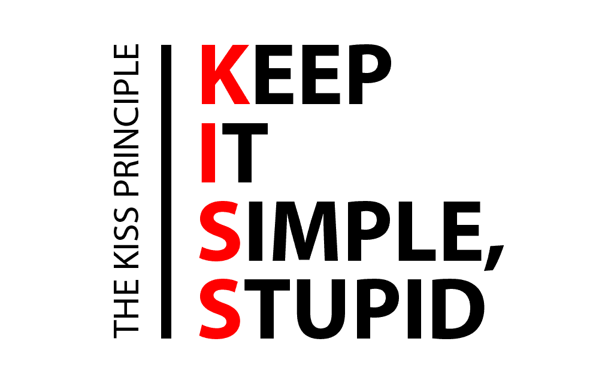
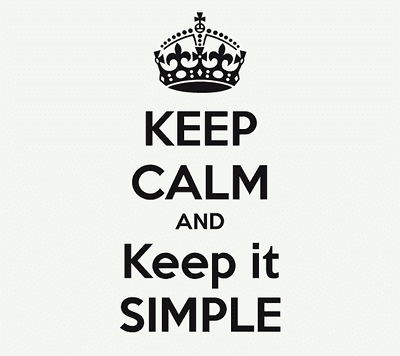

Filosofía KISS.
El principio o filosofía KISS es un acrónimo usado como principo de diseño que significa "Keep It Simple Stupid" o en español ¡Manténlo sencillo, tonto! El principio KISS establece que la mayoría de sistemas funcionan mejor si se mantienen simples que si se hacen complejos; por ello, la simplicidad debe ser mantenida como un objetivo clave del diseño, y cualquier complejidad innecesaria debe ser evitada.
KISS: principio, filosofía, metodología..
El principio KISS se utiliza principalmente en el mundo de la informática y de la ingeniería, donde es necesario minimizar los errores tratando de realizar las tareas de forma efectiva y eficiente complicándose lo mínimo posible.
El mundo digital ha ayudado mucho al principio KISS. Las webs tienden cada vez más a ser más simples, se reduce el número de páginas por web, se reducen los textos, aumenta el grafismo, y por supuesto se simplifican los dibujos e imágenes, los botones, los vectores, los iconos. El diseño de los logos está evolucionando hacia el diseño de apps, o las apps están evolucionando hasta parecerse a los logos. En cualquier caso, para este tema es indiferente la causa o efecto. La realidad es que ambos confluyen en la simplicidad. Todo ello en busca de sencillez, agrado, y comunicación más íntima y personal. Confort para el consumidor. Reducción de esfuerzo para conseguir de la a) a la d).
Desde luego que no es un concepto sólo de aplicación a la creación de tecnología, mucho antes de la existencia de la misma (tal y como hoy la conocemos) muchos grandes creadores ya habían hablado de este principio.
Las bases del principio KISS parecen remontarse a la edad media. Se atribuye al filósofo y monje franciscano William de Ockham (1287 – 1347), la formulación del principio que lleva su nombre: “Principio de Ockham” o “Navaja de Ockham” (también se escribe Occam). Este principio de parsimonia, economía y brevedad plantea que entre dos o más explicaciones competidoras, la hipótesis que tenga el menor número de supuestos debería ser la elegida.
El principio de Occam también sostiene que uno debería proceder de la manera más simple posible hasta que dicha simplicidad pueda ser sustituida por una explicación más consistente, poderosa y basada en los hechos. El principio de Occam admite que nuestra explicación, aunque simple, no necesariamente sea la correcta. Mientras no se pruebe lo contrario será una explicación temporal.
El principio KISS puede convertirse en una filosofía o estilo de vida, aplicable en cualquier ámbito.
En un mundo donde la permanente sobrecarga de información y la creciente falta de confianza en todo tipo de Instituciones crece, el poder de las ideas más simples es más importante que nunca. Una marca de éxito debe contar algo diferente y ser relevante para el consumidor. Y lo más importante, esta diferencia y relevancia deben ser simples para que sean fácilmente comprendidas.
Pues sí, es un principio que apuesta por la sencillez en las formas y en los conceptos a la hora de hacer marketing, un principio que nos recomienda que para vender es necesario prescindir de florituras y de adornos innecesarios, un principio que mantiene que lo simple vende y lo complejo nos pierde.
Y no solo en publicidad. Este principio es aplicable a cualquier actividad de marketing y gestión comercial. En ventas, los argumentos han de ser sencillos para que el posible comprador llegue a desear el producto y vea claras sus opciones de compra. En fijación de precios igual, cuanto más simple más fácil será para el cliente identificar su capacidad de adquisición.
Para llevar a la práctica esta metodología, es preciso que la estructura de contenidos de tu web permita al usuario encontrar la información que busca de forma rápida y amena(en un máximo de 5 clics); ya que un diseño demasiado recargado, llamativo, animado o fuera de lo tradicional supondría tener distraído al usuario del proceso de compra (algo que no queremos que ocurra en absoluto).
Sea como sea, el principio KISS es algo que debemos tener en cuenta a la hora de plantear nuestras acciones de marketing, lo importante siempre ha de ser sencillo y simple, porque si no, cederá importancia a lo superfluo y accesorio. Así que ya sabes: ¡Mantenlo sencillo, estúpido!
“La simplicidad es la máxima sofisticación”. Leonardo da Vinci.
Google triunfó en un mundo lleno de portales como Terra, Yahoo… eliminando lo superficial y dejando que un buscador fuese… un buscador simplemente.
Apple vende teléfonos como churros y, aplastó el mercado con sus iPhone, por su interface sencillo y por permitir manejarlo todo desde un solo botón.
Más empresas KISS son, bajo mi punto de vista, Nespresso , Google, Pepsi, Starbucks, Banco Sabadell…
Simple NO es simplista.
Cada vez que se habla de simplicidad se cae en la trampa del exceso de simplicidad. Los principios anteriormente expuestos no significan que tengamos que ignorar la complejidad de los hechos reales. Un diseño de software simple es el que se centra en los requisitos actuales, pero no olvida necesidad futuras como la mantenibilidad, extensibilidad o la reutilización. Al fin y al cabo, los diseños que buscan la simplicidad del código son más fáciles de adaptar a la necesidades futuras que los complejos.
El principio KISS también es un estilo de pensamiento que no sólo busca facilitar la vida de quien diseña, sino de quien usa o aplica algo.
Estas son algunas acepciones del principio KISS:
- “Keep It Stupid Simple” (Mantenlo estúpido y simple)
- “Keep It Short and Simple” (Mantenlo corto y simple)
- “Keep It Super Simple” (Manténgalo super simple)
- “Keep It Simple and Stupid” (Mantenlo simple y estúpido)
- “Keep It Simple and Straightforward” (Mantenlo simple y sencillo)
- “Keep It Simple and Safe” (Mantenlo simple y seguro)
- “Keep It Simple, Silly” (Mantenlo simple, tonto)
Más sobre nuestra filosofía...